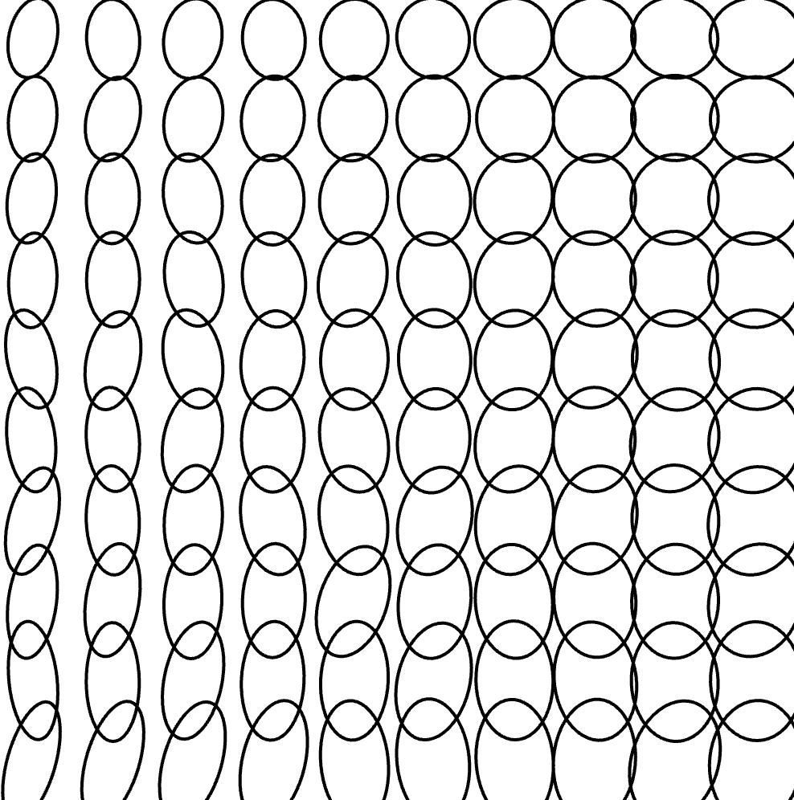
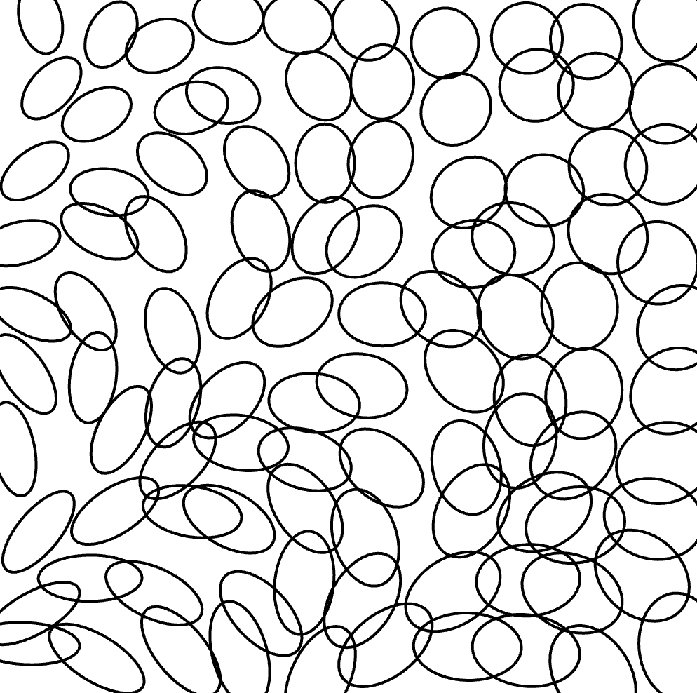
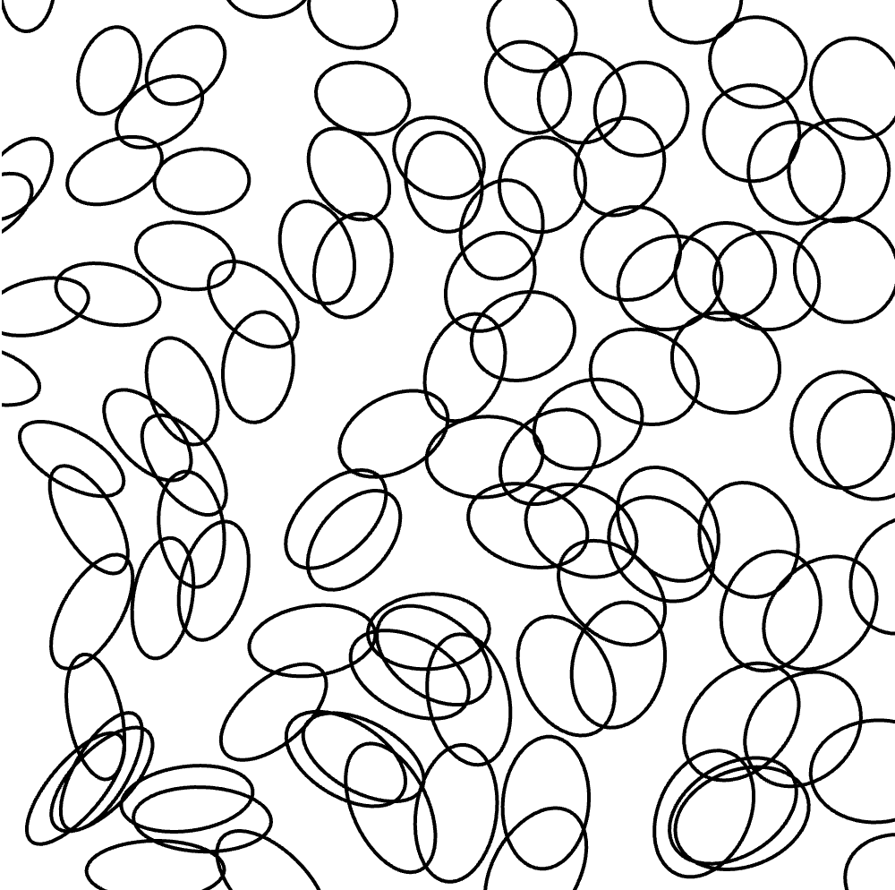

My original drawing uses nested for loops to repeat ellipses across a grid. Their sizes gradually change, while random shifts and rotations create an overlapping, distorted pattern. Mouse movement controls the rotation and distortion, and clicking generates a new variation. When I adapted the sketch using p5.Polar, the ellipses initially appeared much larger, so I adjusted their sizes.
I also noticed that the Polar version looked more uniform, with less random rotation and a less dramatic response to mouse movement. Throughout this process, my drawing evolved from a regular grid into a more abstract composition. Using for loops allowed me to experiment with 100 shapes by changing only a few variables, rather than drawing and adjusting each one individually. p5.Polar introduced a different way of constructing the pattern and helped me consider how it could translate into a pen-plotter drawing.


